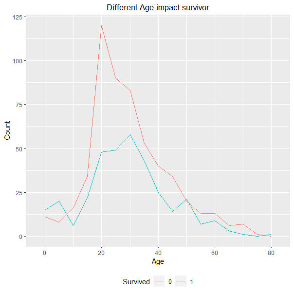

Statistics and Visualization of The Titantic
An Essay for Data Visualization Course
可视化本身的介绍
Titanic故事是从乘客登船开始的。乘客从三个地点上船：Queenstown, Southampton, Chernourg。 从这三个地点的上船乘客的存活人数比率分别是40%，33.7%，55.9%。各个港口的乘客存活情况如下R绘制 的直方图。粉色代表遇难，绿色代表存活。
Southampton港口登船的乘客人数是最多的，而且死亡比率是最高的。从Chernourg登船的死亡率是最低的。 我们猜测，乘客是否幸存不一定和港口直接有关，而是因为从不同港口登船的乘客本身存在差异。 比如可能Chernourg登船的大部分是一等舱乘客，从Southampton登船的大部分是三等舱乘客， 这种不同船舱等级的差异可能是导致从不同港口登船的乘客的死亡率出现差异的原因。
下面的图展示了船舱等级和存活的关系。左下角的图显示，一等舱存活率最高，三等舱存活率最低。 右上角的图三种颜色代表了三个等级的船舱，每个船舱的堆叠数字加和等于购买该等级船票的乘客数。 对于每个颜色的堆叠柱状图，从上至下依次是从Southampton、Chernourg、Queenstown出发的乘客数量。
由上图可见，一票等占比从高到低分别是Chernourg50.6%，Southampton19.72%，Queenstown2.67%。 从Southampton和Chernourg的对比来看，可能船舱等级越高，乘客存活率越大。 但是Southampton和Queenstown的对比却不能说明这一点，因为Southampton的一等票占比远比 Queenstown的一等票占比要高，但是存活率却低于Queenstown。因此存在除了船票等级外， 对乘客生存影响的其他因素。
我们绘制了三个港口的登船男女比率。此外，我们知道在Titanic的故事中，女士和小孩有优先逃生的特权。 我们想知道性别和年龄是否显著影响存活，因此我们还绘制了分类性别、分类年龄的直方图和分性别的累计 生存概率曲线。
女性占比对不同港口的存活概率可能存在影响。Southampton的女性比率确实比Queenstown的女性比率要低， 而且前者的乘客存活率比后者要低。实际上，港口和乘客存活与否并不存在因果关系， 我们引入港口的目的不是研究该变量对生存概率的影响，而是希望还原真实的研究思路，把故事讲完整。 在我们研究港口登船游客的情况过程中，我们发现了多个对乘客个体死亡率存在影响的变量， 而且发现了这些变量之间可能存在交叉关系，也有可能存在多重共线性。 后面我们考虑使用Logistics回归探究不同变量的作用。
下面我们分别对年龄、性别、家庭人数、船票等级等可能影响存活概率的因素使用可视化， 探究这些变量和乘客存活的关系。
上图的child和adult是我们根据引入的新变量。Child定义为18岁以下的人。 红色死亡，绿色生存。可见小孩确实获得了优先逃生的权利
对性别分类后发现，女性在Titanic中获得了优先逃生权，存活概率显著高于男性。
从累积生存概率曲线可见，到13岁左右的男女生存概率几乎没有差别，从此往后，女性生存概率缓慢上升 至平稳在75%左右。男性生存概率在13到20岁的区间里急速下降，至30岁以后稳定在20%左右。
下面的图展示了死亡人数（红色）和存活人数（绿色）的分年龄折线图。 死亡人数和生存人数从10岁到20岁之间快速上升， 说明年龄区间人数很多。再结合男女人数的占比，一定程度上解释了上面一张图（累积分布图） 的男性累计死亡率在10到20之间急速升高。
家庭FamilySize定义为乘客个人、乘客的sibling、parch三者之和。在FamilySize为2，3，4时， 乘客的存活概率是显著高于家庭人数为其他的乘客的存活概率的。
从上面的折线图描述了不同船票价格的生存死亡数量。当船费小于50，存活人数小于死亡人数， 而当船费大于50，存活人数大部分情况下高于死亡人数。
上面的箱线图展示了船舱等级和票价的关系。每个点横轴对应了船费。除少数离群点外， 一等舱的船票价格一般是高于二等和三等舱的。
通常，船费的高低和船舱等级有关。等级越高的舱船费越高，所以这两个变量存在共线性。 此外，通过对原始数据的统计发现，存在少数人船票价格为0的情况， 也有部分人船舱等级高而船票费低于一些低等舱的船费情况。综合考虑上面两个因素， 我们不把船票费作纳入对生存概率的Logistics建模，在描述影响存活概率的因素时也不考虑船费。
下面是仅提供给了解回归分析的管理者作为参考决策的回归分析可视化。综合上述的可视化和定性讨论影响存活概率的因素， 我们使用Logstics回归分析各个因素对存活概率的影响程度。为了解释的方便，我们没有标准化。 通过多次拟合模型，我们筛选出以下的显著变量：船舱等级Pclass，年龄Age，性别Sex（二分类，0表示男，1表示女）， 家庭成员数量FamilySize。绿色小点对应的横坐标OR表示系数估计值，线段两端表示估计值的上下95%分位数。 性别系数为正，表示女性生存概率显著高于男性。船舱等级系数为负，表示船舱等级约高， 生存概率越大。年龄和家庭成员数量越小。生存概率越大。生存概率P(x)的回归方程如下。
Titanic的故事到此结束。我们从乘客从港口出发开始讲起，围绕影响乘客生存概率， 从定性到定量，探讨了对乘客生存概率由显著影响的因素， 最终得到了乘客生存情况的可视化和生存概率方程，解决了管理者和兴趣者的问题。